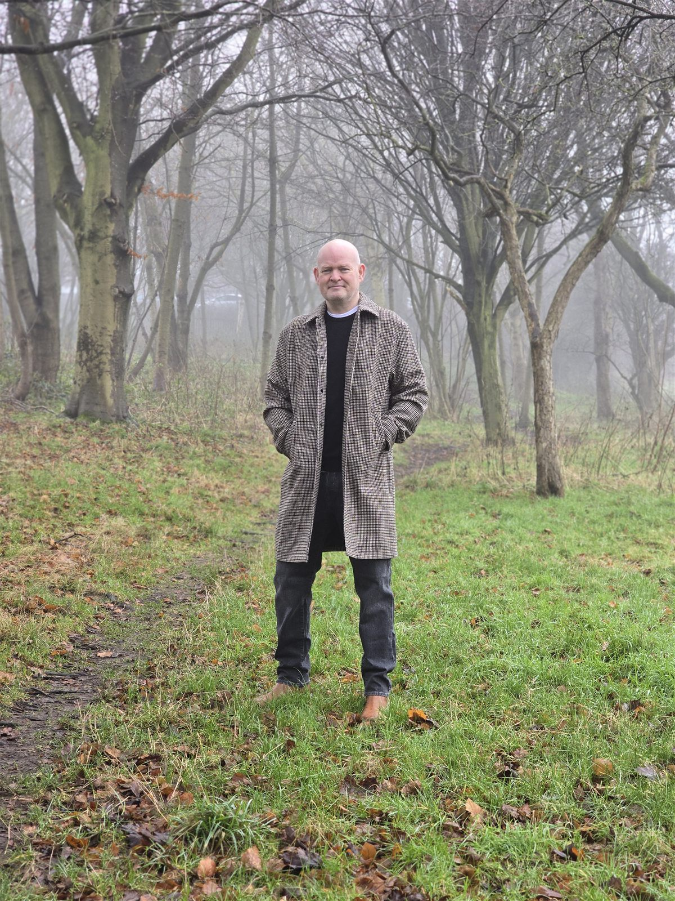

James Brodie
James has been fascinated by the UFO and Paranormal phenomena and has been actively investigating and researching for over 30 years. James is an investigator at the Birmingham UFO Group, where Dave Hodrien is the chairman.
During that time, James is an experiencer, including a direct experience with two MIB, although one was female. In recent times James has also experimented with precognitive remote viewing. Both the MIB encounter and the precognitive remote viewing reports can be found in the Articles section.
As an active paranormal investigator, James has investigated some of the UK's most notorious sites, including the Ancient Ram Inn in Gloucestershire and the "Secret Nuclear Bunker" in Surrey. Again, James also has direct experience of paranormal encounters.
In recent years, James has appeared on a number of podcasts and YouTube videos, which can be found in the Social Media section of the site.
The site also has a YouTube presence and Facebook Group, which although currently small, James is looking to build up while still committing to the Birmingham UFO Group.
James is also currently writing a book based on the concept of Universal Harmonics, which takes elements of String Theory, Information Field Theory, Consciousness, and Interconnectivity.
Why "Paralnoia"?
The name Paralnoia takes the words Paranormal and Paranoia and links them together. This is a visualisation of the conflict people often feel when encountering something that isn't immediately available.
Please feel free to reach out to James via the Facebook Group, as he is always happy to discuss personal encounters.